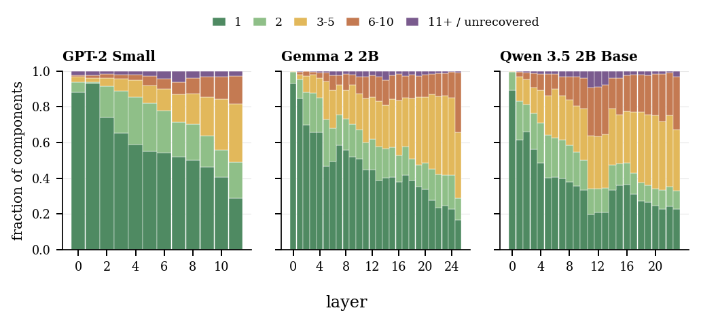
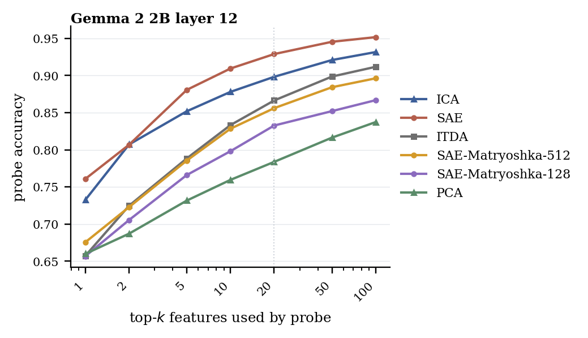

GPT-2 Small
Independent Component Analysis for LLM activations
ICA Lens
Interpreting language models without training another dictionary
A practical GPU FastICA pipeline for finding compact, non-Gaussian, human-inspectable directions in residual streams and embeddings.
The idea
Use ICA as a fast first pass before committing to a large SAE dictionary.
Sparse autoencoders are powerful, but each model, layer, activation site, and sparsity regime can require another trained dictionary. ICA Lens asks how much interpretable structure is already visible from activation geometry: normalize activations, fit a compact ICA basis, inspect the signed directions, then decide where heavier dictionary learning is worth it.
Human inspection
The same surface word decomposes differently by context.
The paper probes repeated uses of bank across financial and river-edge contexts. ICA exposes mixtures of lexical, syntactic, semantic, positional, and longer-context components at the target token, and the explorer lets readers inspect the signed scores and top examples directly.
Open this exact paragraph
Label testing
Working labels are checked with matched sentences.
After inspecting top examples, annotators write label-consistent prompts that should activate a signed component and matched controls that should not. Large signed scores and high target-token ranks support the label; weak scores or low ranks force the label to be revised.
Random cases
Open the live lens on random-audit examples.
These cases are live Hugging Face Space links built from the random-150 component audit. Each opens a different model, layer, prompt, and signed component so readers can inspect how ICA directions behave beyond the main bank example.
Effective Receptive Field
Layer roles are mixtures, not hard cutoffs.
ERF asks how much left context is sufficient to recover the same signed component response at a target token. That turns each ICA direction into evidence about what scope of text it uses, revealing layer specialization as changing distributions rather than a clean local-to-global handoff.
- Early layers are mostly local, but not only local. Even shallow layers contain context-dependent directions.
- Later layers become more contextual, but not purely global. Deep layers still retain many token-local components.
- Middle layers carry many broad-context directions. The largest-ERF components often peak before the final layers.

ICA and SAE
Complementary patterns, partial overlap.
SAEs and ICA both expose directions in activation space, but their objectives shape different kinds of evidence. Sparse reconstruction often yields localized feature events; non-Gaussian ICA directions can trace compact contextual factors across neighboring tokens.
Pattern difference
Same sentence, different response shapes.
On the bank sentence, selected SAE features mostly peak at one token or a short span. ICA scores vary more smoothly across related words such as bank, deposit, check, withdraw, and cash. That is why the methods are useful together: SAE highlights sparse events, while ICA exposes broader contextual traces in a compact basis.

Directional overlap
Some ICA components have close SAE neighbors.
For each ICA component, the paper finds the public SAE decoder direction with the largest absolute cosine in the same layer. The distributions are broad: many components have moderate or weak nearest-SAE overlap, while a high-overlap tail gives convergent evidence and useful label cross-checks.

GPT-2 Small L10/C142
Conditional repetition
Closest SAE feature F29658 with cosine similarity |cos| = 0.75.
Gemma 2 2B L24/C510
Female-centered narrative
Closest SAE feature F9501 with cosine similarity |cos| = 0.73.
Qwen 3.5 2B Base L22/C511
Alternative construction
Examples: either / whether ... or. Closest SAE feature F8570 with cosine similarity |cos| = 0.68.
Quantitative checks
Three checks, one story.
The paper starts from a statistical clue, then asks whether the resulting ICA coordinates carry task-relevant information and support selective interventions in SAE-style benchmarks.
Non-Gaussianity
Feature-like directions leave a measurable footprint.
Random directions in row-normalized activation space are close to Gaussian, while public SAE decoder directions are much more kurtotic. ICA makes that clue explicit: after centering and whitening normalized activations, it searches for a compact basis whose one-dimensional projections are as non-Gaussian as possible.
Across GPT-2 Small, Gemma 2 2B, and Qwen 3.5 2B Base, the fitted ICA directions are substantially more non-Gaussian than random directions and typically exceed public SAE decoder projections.

SAEBench Sparse Probe
Compact ICA coordinates are competitive probe features.
SAEBench sparse probing trains supervised probes on the top-k feature activations, so it tests the coordinates directly rather than decoder reconstruction. Despite using far fewer directions, ICA remains competitive with public SAEs and consistently outperforms PCA and ITDA. On the Gemma 2 layer-12 comparison, ICA also stays strong against the prefix-restricted Matryoshka SAE variants.

Gemma 2 layer 12 detail check
This extra comparison is narrower in scope but includes the two Matryoshka SAE budgets. It asks whether a prefix-restricted SAE dictionary closes the sparse-probe gap on the layer where those baselines are available.

SAEBench Targeted Probe Perturbation
Small ICA interventions can move the target cleanly.
Targeted Probe Perturbation chooses the top-N latents for a class, zero-ablates them, and measures both intended effects on the target probe and unintended effects on other probes. A useful dictionary should move the intended probe while limiting spillover.
ICA is strongest in the small-N regime: a few directions produce large intended effects while keeping unintended effects comparatively low. At N = 500, ICA has consumed a much larger fraction of its compact basis, so broad disruption and unintended change naturally rise.

Try it
Use the hosted explorer, or run the release locally.
The hosted Space is the fastest route for inspection. The GitHub repo contains the released pipeline, artifact manifest, reproduction scripts, and a local FastAPI explorer for the mini or full databases.
uv sync
uv run python scripts/fetch_artifacts.py --models --databases
uv run python scripts/verify_artifacts.py
uv run python -m server.app --port 8001Citation
ICA Lens
@misc{liu2026icalens,
title = {ICA Lens: Interpreting Language Models Without Training Another Dictionary},
author = {Sida Liu and Feijiang Han},
year = {2026},
note = {Code and artifacts: https://github.com/liusida/ica-lens-paper}
}